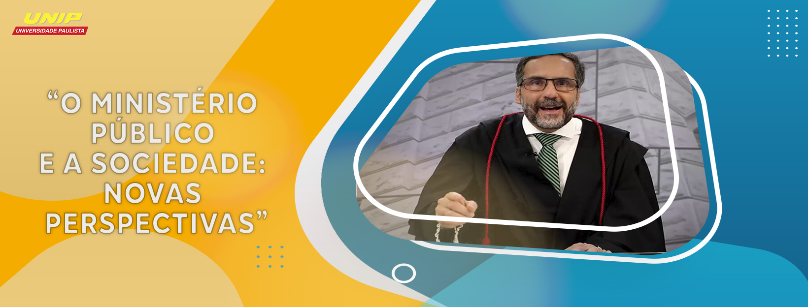
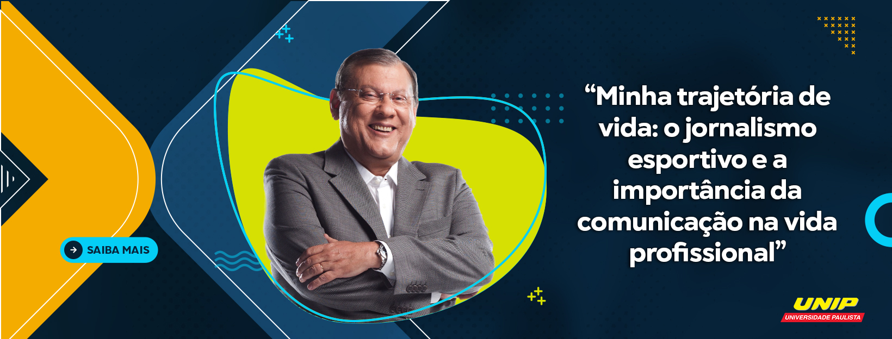

-

- 
- 
“Riscos e invasões nas redes sociais” 25 de agosto de 2020, terça-feira, às 19h30
Dr. Luiz Augusto D’Urso – Advogado Especialista em Direito Digital e Cibercrimes
“O protagonismo do Brasil na importante missão internacional humanitária no Libano” 24 de agosto de 2020, segunda-feira, às 19h30
Dr. Michel Temer – Ex-presidente da República Federativa do Brasil
“Minha trajetória de vida: o jornalismo esportivo e a importância da comunicação na vida profissional” 27 de agosto de 2020, quinta-feira, às 19h30
Milton Neves – Jornalista Esportivo e Apresentador de TV